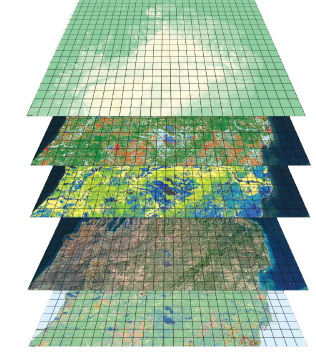

QGIS tutorial
Roger Veciana i Rovira

GIS
- Digital Data
- Computer Hardware
- Computer Software
Data layers

Data types
- Vector data
- Raster data
Vector data
Attributes
Multi geometry

Raster data
Raster layers
1 position = 5 values
- Open Source
- Widely used
- Lots of integrated features
- Plugins
Opening data sources
- Files (GDAL)
- Databases (i.e. postgis)
- Web services (WMS, WFS, etc)
- GeoPackage
Represent and get values
- Color scale
- Icons/fill for vectorial layers
- Save styles
- Information by point / feature
Calculations
- Raster algorithms
- Statistics
- DEM functions
- Custom functions
- Vector algorithms
- Centroid
- Topology (simplify, dissolve, difference,etc)
- Vertices, Voronoi, etc
- Data edition
- Plugins
- Python
Projections
- On the fly layer reprojection
- Layer reprojection tools
- Format transform
- Both vectorial and raster data
Projections: Example
Map edition mode
- Titles, scales, legends, arrows...
- Different export options
- Template saving
Practical Exercices 1: Viewing files
- Raster files
- K1710190000v2
- Set color scale
- Vector files
- Comarques
- Set style
- >dissolve
Practical Exercices 2: Vector files
- Filter
- Colors
- Heatmap
- Raster grid -> count
- Rasterize
- Cluster
Practical Exercices 3: Raster files
- Raster calculation
Practical Exercices 4: Map creation
Still have time?
- track data --> processing --> points to path
- Import csv
- LMA data --> Regexp [ \t]+